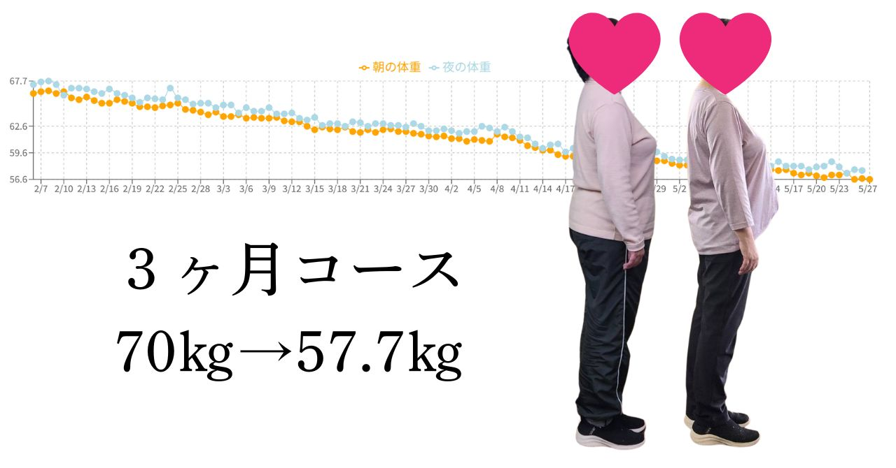

リバウンドの女王が、
人生最後のダイエットに成功するまで

ヘアリズムに来られる前の、あるお客様（70代女性）のお話です。
Before｜失敗の連続
20代から数えきれないほどダイエットをしてきた彼女。りんごダイエット、置き換え、ジム、エステ……試したものは数知れず。そのたびに一瞬痩せては、必ず元以上に戻る。「私はもう、何をやっても痩せない体質なんだ」——そう思い込んでいました。
転換点｜"やり方"との出会い
そんな彼女がヘアリズムで最初に言われたのは、意外な一言でした。
「痩せないのは、あなたのせいじゃありません。順番が逆だっただけです。」
頑張る量を増やすのではなく、体が自然に痩せていく"順番"に整える。運動も極端な食事制限もなし。やったのは、毎日の小さな見直しだけ。
After｜3か月後
グラフの通り、70kg → 57.7kg。 約3か月で −12kg以上。しかも一度も「我慢でつらい」と感じることなく。「人生で初めて、リバウンドの不安がない痩せ方ができました」——彼女はそう言いました。
これは、特別な人の特別な話ではありません。
同じ変化が、40代・50代・60代の女性に、次々と起きています。